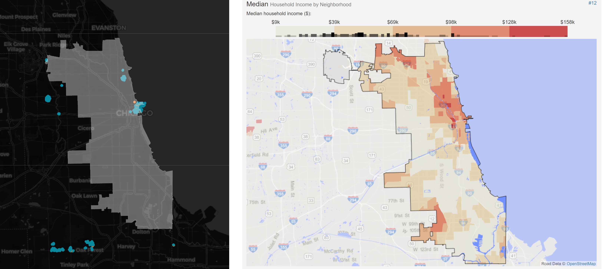

Explore the Data
Exploratory Data Analysis
We chose to focus on five different American cities for this part of our exploration. These cities included New York City, Los Angeles, Chicago, Denver, and Seattle. We chose NYC, LA, and Chicago based on population (as they are the 3 cities with the highest populations in the US), but chose Seattle and Denver based off personal preference. Since we all live in Seattle, we thought it would be an interesting city to look into. One of the group members previously lived in Denver and thought it would be interesting to compare since Seattle and Denver have similar population sizes.
City Comparisons
All income maps courtesy of Statistical Atlas
Comparison between New York City’s Pokemon appearances (mapped using Folium) vs NYC Median Income by Neighborhood. Comparison between LA’s Pokemon appearances vs LA Median Income by Neighborhood  Comparison between Chicago’s Pokemon appearances vs Chicago Median Income by Neighborhood Comparison between Seattle’s Pokemon appearances vs Seattle Median Income by Neighborhood Comparison between Denver’s Pokemon appearances vs Denver Median Income by Neighborhood
For all maps, orange dots are Pokemon that appeared during the day, while teal dots are Pokemon that appeared at night.
Looking across all five maps, it is clear that some places have a correlation, while others do not. For example, New York City and Chicago seem to be the most egregious when it comes to Pokemon sightings appearing in wealthier areas as opposed to low-income areas. There are, however, small clusters of outliers. Los Angeles, on the other hand, doesn’t seem to have this problem. The highest-income neighborhoods actually seem to have the least amount of Pokemon sightings middle-to-moderate income areas seem to have more. Denver doesn’t seem to have any correlation, and Seattle doesn’t seem to have much of one either.
When researching our problem, we found out that Pokestops (which are common spawn points for Pokemon) and Gyms (gathering places for Pokemon Go players, which then attracts more Pokemon) were determined by Google landmark data, as well as self-reported locations of interest. This makes a lot of sense when looking at Seattle’s map, which has huge clusters around University District, which has many landmarks. The correlation (or lack thereof) in other cities could also be attributed to different neighborhood’s amount of landmarks. This makes it understandable why the richest neighborhoods in Los Angeles don’t have any sightings, since these neighborhoods are secluded, and the residents are often celebrities. New York City, on the other hand, has rich neighborhoods that also have historic landmarks.
While income may have a broader effect overall, in the case of these five cities, income did not always correlate with Pokemon appearances.
Data Prep: Encoding and Splitting
After we chose our data set, realized that our data had no quantitative variables, and instead only had categorical variables. Due to the lack of quantitative variables, we do not have any quantitative questions. However, we were curious whether or not we could predict how many Pokemon of each type would appear, so we chose Pokemon type to be our target dependent variable.
To address the issue of our categorical target variables, we needed to encode our variables. To do that, we used the Pandas function get_dummies(). We chose this method because both it and our data frames were managed by the pandas library. Before encoding the data, we dropped certain variables that we did not need, such as name, ID, city, weather icon, and appeared local time and day of week. Afterwards, we looped through the entire dataframe and converted all objects to floats and removed the originals.
After we finished encoding the data, we split it into our training data and test data. We used an 80/20 split, so that 80% of the data was used to train our model and 20% was used to test its predictions.
Please continue on to the next section for our data modeling!